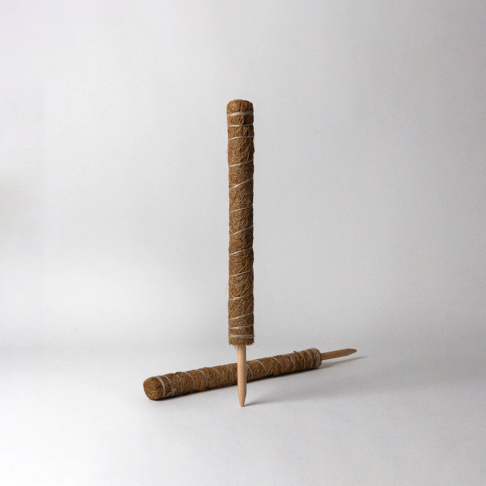
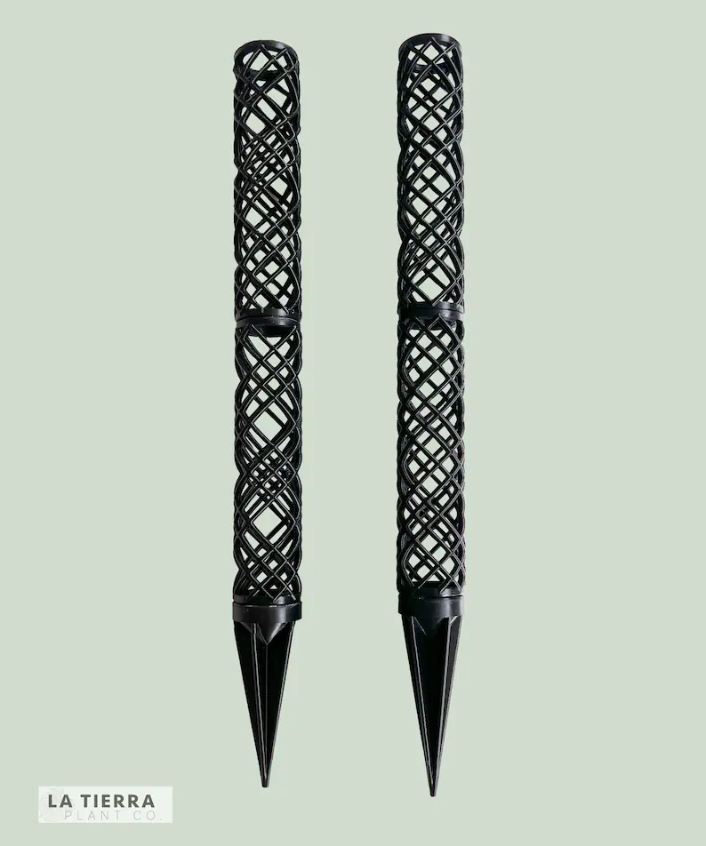
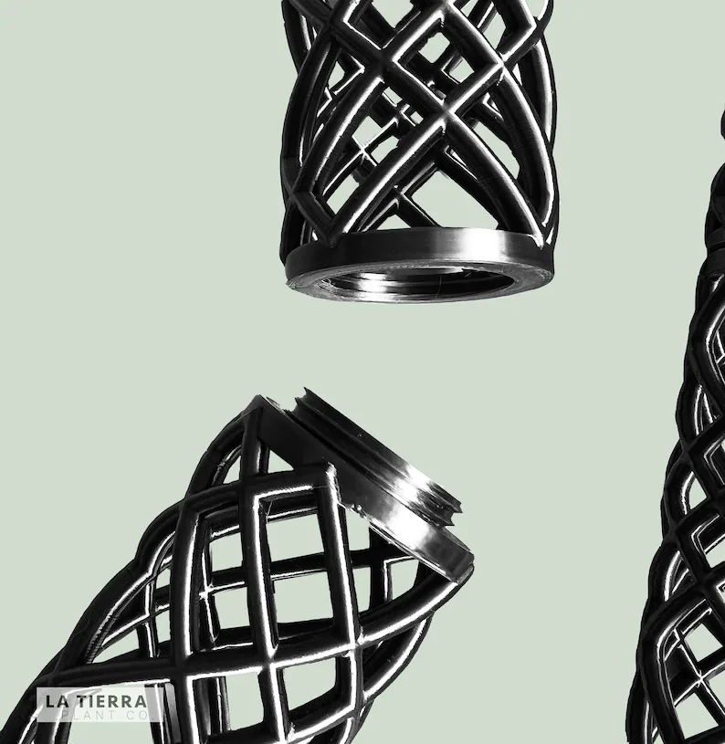

Final Proposal
Jessica Douma | HCDE 533 | Autumn 2022
Digitally Fabricated Moss Poles and Accessories
Concept


Image source: Etsy Listing
For my final project I will be using digital fabrication techniques to design and create moss poles for plants. Moss poles are used for various climbing houseplants. They are made of or contain various substrate for the roots of the plants to grow into and for the plant to support itself. While many different moss poles can be found in different plant stores, they all have one simple design flaw - because the poles are essentially shaped as just a rod, they do not provide any foundational support. As the moss poles get taller and taller, the plant gets heavier, or just as a result of several waterings, the moss poles eventually begin to lean and or become dislodged.


Image source: Etsy Listing
While digitally fabricated moss poles do exist, many of them perpetuate this basic design flaw and do not provide a foundational base either. While I intend to draw inspiration from other digitally fabricated moss poles, my goal for this project is to design a moss pole that is structurally supported and will not fail over time. I will also be designing clips that can be used with the pole to easily attach a climbing plant to the pole. A stretch goal of mine is to also digitally fabricate decorative toppers that can be added to the tops of the moss poles for aesthetics. My overall design is represented in the below sketch:


Concept sketches. This is a rough modeling of how the final components may be shaped and is not final. Sizes and dimensions are approximated and now drawn to scale.
My moss pole design consists of four main components, as pictured above, all of which screw into each other.
MODULAR MOSS POLE
This is the component of the pole that will actually contain the substrate. It will not be a solid rod, but rather a perforated mesh that will hold the substrate or moss. The top of the moss pole contains a female bolt and the bottom of the moss pole has a male screw. This allows for the moss pole to be screwed into both the anchor adapter and other moss pole sections to further extend it.
ANCHOR ADAPTER
The moss pole will potentially be much wider than the anchor extender. This piece allows for the transition between widths and secures the moss pole section to the rest of the pole.
ANCHOR EXTENDER
This component can either come in various hieghts or be combined with other anchor extenders to reach the desired hieght. The anchor extenders extend the base of the anchor adapter to the top of the plant container or soil. It is thinner than the moss pole section to both save material and minimize the room the entire moss pole takes up within the pot (leaving more room for soil and dirt).
ANCHOR BASE
The base component anchors the moss pole within its container and fits within the base of the container and is held down by the contents of the pot. It contains large cut outs to allow for water drainage. It also contains two mounting options (centered and offset) to support multiple plant and container types. Depending on how this piece sits within the pot, I may need to add additional slits or stilts for better water drainage.
For the final project I will be fabricating at least one complete moss pole (one of each of the four components). Although, I will be designing the components parametrically so that the moss pole supports multiple standard conatiner sizes. Time permitting, I will print multiple poles for different sized containers.

The plant clips will be a simple shape, laser cut from acylic. They are intended to push into the moss pole and hold the stem of the plant against the pole. Since these will also be designed parametrically, I intend to explore different widths to support different plant stem sizes.
Task Breakdown
- Parametrically design plant clips in Grasshopper and Rhino
- Laser cut plant clips
- Parametrically design moss pole pieces in Grasshopper and Rhino
- 3D print moss pole pieces
- Stretch Goal: Design a 3D printed mold in Rhino for casting a silicone mold using meshes from Thingiverse
- Stretch Goal: Cast decorative moss pole caps that can be attached to the top of the moss poles
Stretch goals listed in this section and below are not expected to be achieved 100%. Deviations or incompletion of the stretch goals should not result in point deductions. Rather they are goals that I hope I will have time to complete as "extras" or "nice to haves" for the final assignment.
Timeline + Contingency Plan
| Timeline | Task | Plan | Contingency Plan |
|---|---|---|---|
|
anchor base, anchor extender, anchor adapter by 11/24
modular moss pole by 11/26 plant cips by 11/27 |
Parametrically design moss pole pieces and clips in Grasshopper and Rhino | All of the moss pole pieces and the clips will be designed parametrically in Grasshopper so that sizes can be easily adjusted. The moss pole pieces will use a screw mechanism to attach to each other |
|
| by 11/30 | Laser cut plant clips | Plant clips to attach the plant to the moss pole will be laser cut from Acrylic |
|
|
Test prints to validate design will happen concurrently with parametric design and finished by 11/29
Final prints by 12/3 |
3D Print Moss Pole Pieces | Each moss pole will consist of a base, and extension, and extendable moss poll pieces, that all screw into eachother |
|
|
3D printed molds by 11/30
Silicone molds by 12/1 Casts by 12/3 |
Stretch Goal: Moss pole caps | Mold and cast decorative pieces that can be attached to the top of the moss pole |
|
Bill of Materials
| Material | Sourcing Schedule |
|---|---|
| Filament | Obtained ✅ |
| Acrylic Sheets | Obtained ✅ |
| Oomoo | Obtained ✅ |
| Perfect Cast | Obtained ✅ |
Source Files
Rhino file containing concept sketch
Acknowledgements
The following Etsy listings served as inspiration for my design concepts:
Moss Pole Pins
Modular Moss Poles
Moss Pole Anchors
Laser Cut Inspiration - I really wanted to make something like these but unfortunately I don't think my drawing skills are up to par.